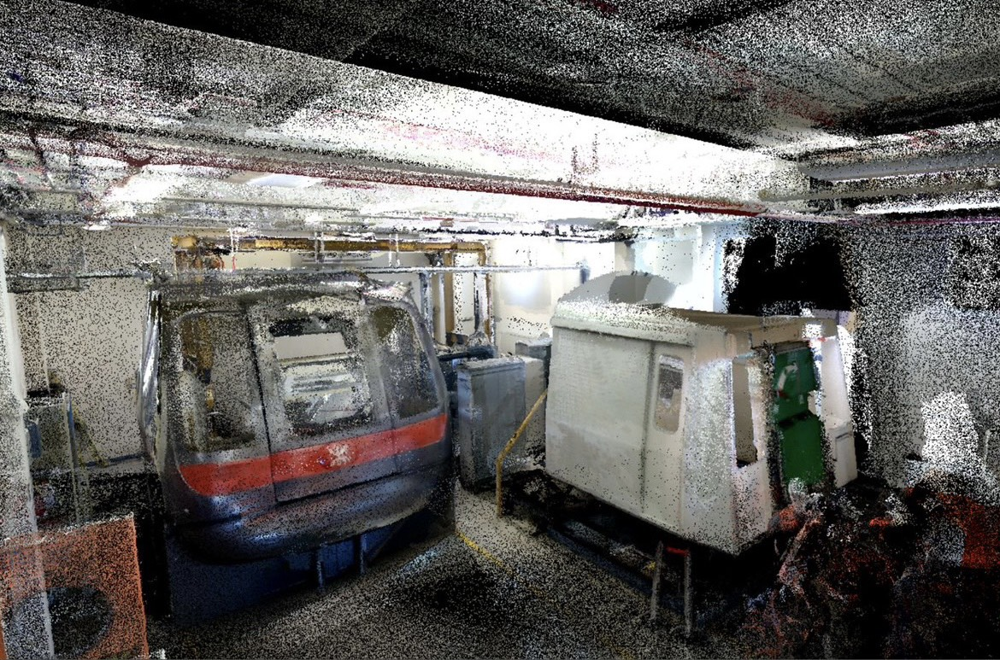

Recent Projects

InnoGrow: Non-Toxic Weed Killing Box
[Video]
[Code]
- Developed INNOGROW: a non-toxic laser weed control solution for sustainable farming in Asia.
- Trained a weed detection model with a custom dataset; integrated with NCNN on Raspberry Pi for a compact design.
- Controlled laser shooting with a servo using an ESP32 board.

Digital Twins: 3D Gaussain Splatting Reconstruction
- Collaborating with MTR, building a digital twins for tunnels.
- Lidar Scaning and processing.
- 3D Gaussian Splatting using Lidar Slam initialization.
Multimodal AI Assistant: RAG system for both image and text
[Video]
[Code]
- Developed a multimodal RAG system for processing and generating text and images.
- Created a data preprocessing pipeline with layout detection and Azure OCR for content extraction.
- Designed a retrieval mechanism for interleaving text and images, enhancing traceability and accessibility.
Grounding-Dino: zero shot training with real time camrea feed
participate in HKU innoshow2024[Video]
[Code]
participate in HKU innoshow2024
- Developed a real-time object detection and tracking system from Grounding DINO and live feed.
- Implemented keyword-based detection for continuous object tracking.
- Showcased advanced computer vision techniques for dynamic mobile interaction.
Azai Solution - CRM + Payment API Application
Winning the 1st prize for Cyberport CUPP 2023 micro funding[Page]
[Video]
Winning the 1st prize for Cyberport CUPP 2023 micro funding
- Developed AZAI, a smart CRM app for landlords in Thailand using React Native and TypeScript.
- Integrated payment APIs and Firebase for efficient contract and property management.
- Utilized Next.js for backend development, adding analytics features to improve landlord-resident interactions.